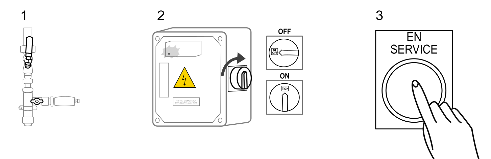
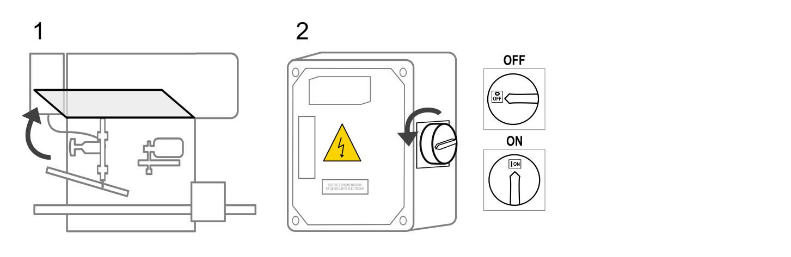
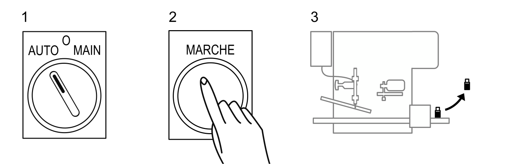
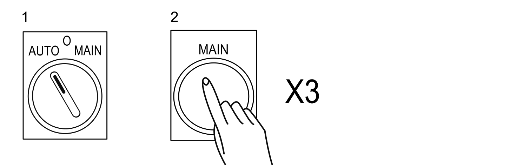
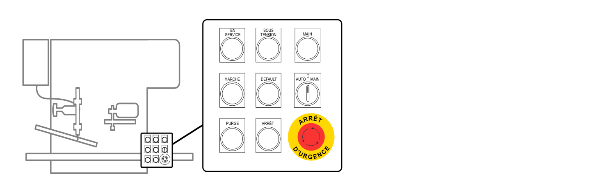
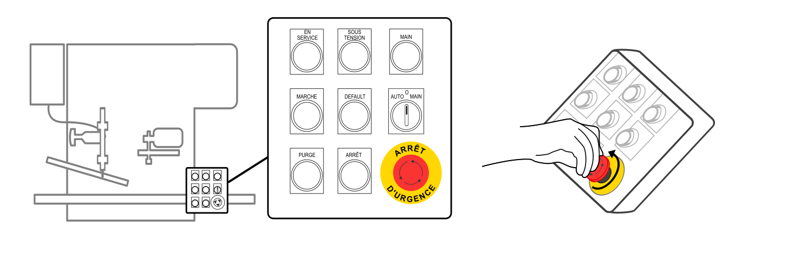
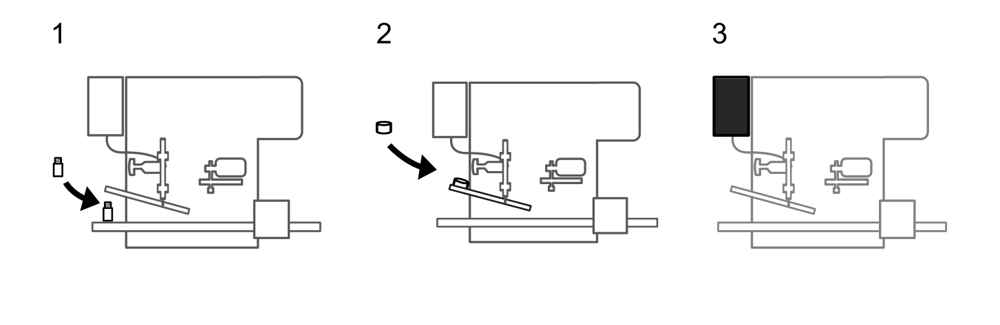
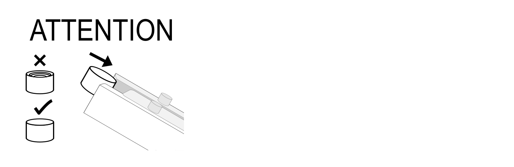
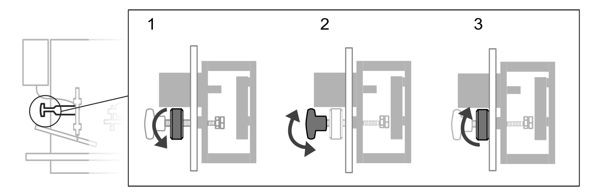

Utilisation
Allumer / Éteindre la machine
Allumer la machine
La machine doit être raccordée aux réseaux d'énergie, .
Le carter de sécurité doit être baissé.
Le bouton coup de poing ARRET D’URGENCE doit être libéré, .
- Ouvrir l'arrivée d'air du circuit pneumatique.
- Tourner l'interrupteur principal sur la position ON.
- Appuyer sur le bouton EN SERVICE.

Éteindre la machine
- Lever le carter de sécurité.
- Tourner l'interrupteur principal sur la position OFF.

Lancer la production de flacons remplis et bouchés
Lancer la production en série
La machine doit être allumée, .
Le robinet sous le réservoir doit être ouvert.
Le nombre de bouchons sur la rampe doit être adapté au nombre de flacons vides sur le tapis d'entrée.
- Tourner le sélecteur AUTO / O / MAIN sur la position AUTO.
- Appuyer sur le bouton MARCHE.
- Évacuer les flacons remplis et bouchés du tapis de sortie.


La production se met en pause automatiquement lors de bourrage de flacons sur le tapis de sortie et lors de manque de flacons sur le tapis d'entrée. Lors de cette pause la machine reste en service. La production reprend automatiquement lorsque les causes du bourrage sont éliminées.
Lancer la production à l’unité
La machine doit être allumée, .
Au moins un flacon vide doit se trouver tapis d’entrée.
Au moins un bouchon doit se trouver sur la rampe.
- Tourner le sélecteur AUTO / O / MAIN sur la position MAIN.
- Appuyer sur le bouton MAIN 3 fois.

À chaque appui sur le bouton MAIN le plateau tourne d'un cran et les actions des postes de remplissage et de vissage sont réalisées.
Arrêt d’urgence
Déclencher l’arrêt d’urgence
- Appuyer sur le bouton coup de poing ARRET D'URGENCE.

Acquitter l’arrêt d’urgence
- Tourner le bouton coup de poing ARRET D'URGENCE.

Alimenter la machine en matière d’œuvre
Le réservoir doit contenir suffisamment de liquide.
Pour connaître les capacités d’alimentation, .
- Alimenter en flacons.
- Alimenter en bouchons.
- Alimenter en liquide.

La partie filetée des bouchons doit être contre la rampe.

Régler la dose de liquide versée
- Dévisser la molette grise pour permettre le réglage.
- Visser / dévisser la molette noire de la butée de dosage jusqu'à obtenir la longueur de course souhaitée.
- Visser la molette grise pour bloquer le réglage.
